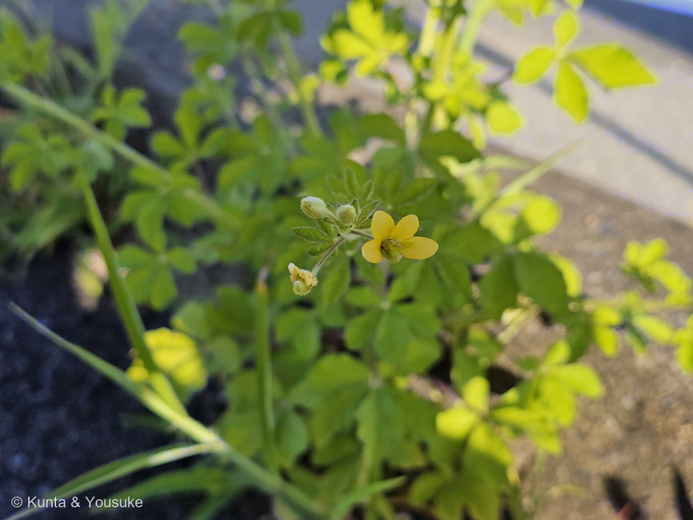
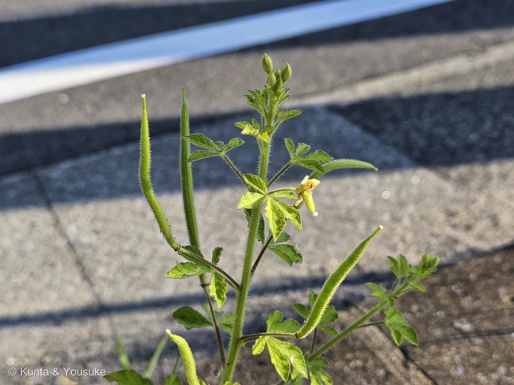
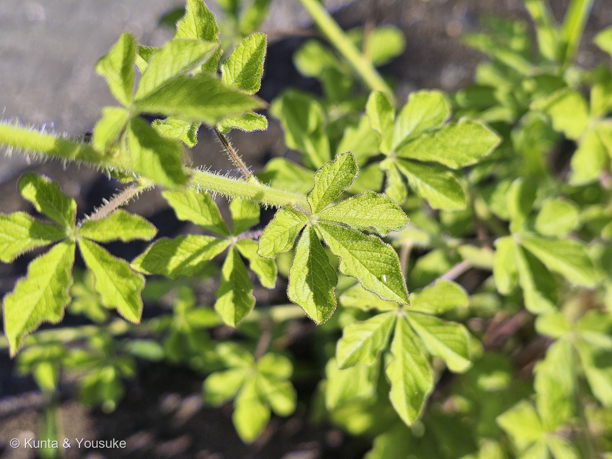
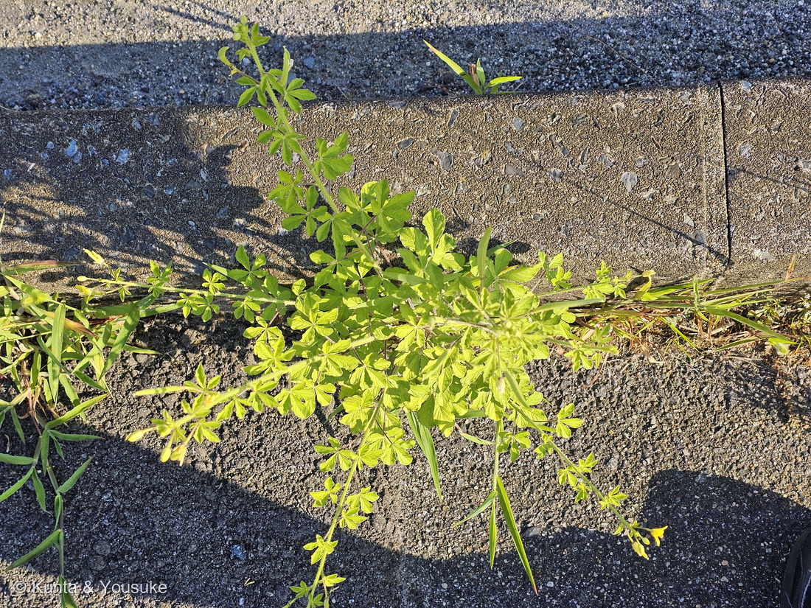
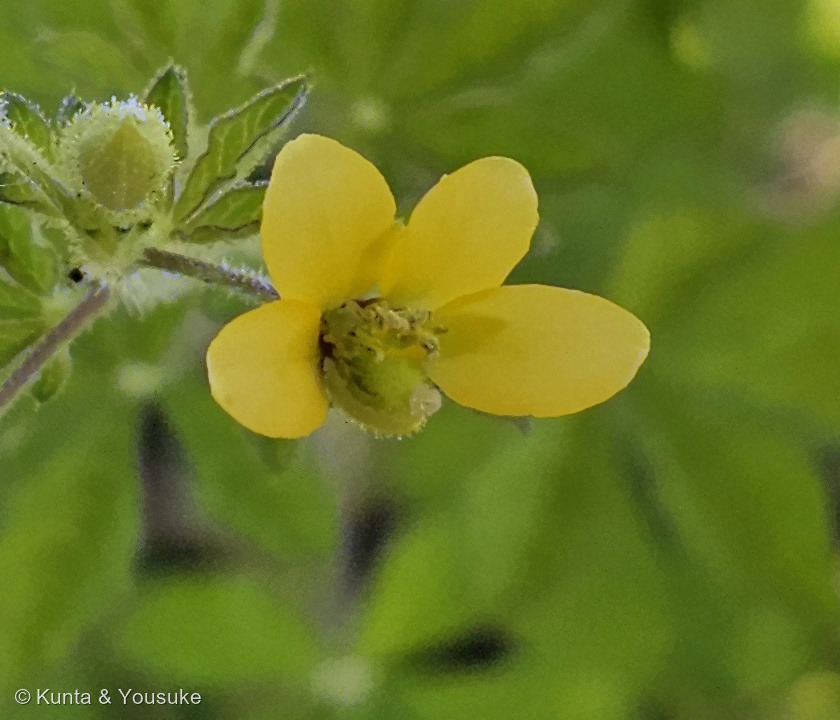

地図を読み込んでいるよ…
🔍 写真も地図も、押しているあいだ拡大して見られるよ（スマホは指を置いてすこし待ってね）。
🌍 の地図＝この子がもともと自生している場所を緑に。⚠出典で割れているよ。岡山大学「日本の帰化植物一覧表」は「タイ及び南東アジア原産」、botanic.jp は「アラビア半島とアフリカ原産」とする。いまは世界の熱帯・亜熱帯に広く帰化している。くわしくは下の地図の説明を見てね。
⚠⚠この緑は、ほかの子より自信がうすいよ＝原産地が出典で割れているから。⭐岡山大学「日本の帰化植物一覧表」は「タイ及び南東アジア原産」とし、botanic.jp は「アラビア半島とアフリカ原産」とする＝⚠ぜんぜんちがう場所を指している。⭐ここでは、日本の出典である岡山大学の「タイ及び南東アジア」のほうを塗った（南アジアも含めたのは、この子が古くからインド・バングラデシュ・スリランカにも広く分布しているから）。⚠⚠だから、この緑は「だいたいこのあたり」より弱い、「出典のひとつが言っている範囲」だと思ってね。⭐⭐いま確かなのは、世界の熱帯・亜熱帯にとても広く帰化していること（英語版Wikipedia は「invasive species」として、アメリカ・アフリカ・アジア・オーストラリアの温暖湿潤地に広がるとする）＝⭐もう「もともとどこの子か」が見えにくくなるほど、あちこちにいるということ。⚠⚠日本は緑にしていない＝ここでは帰化植物だから――⚠そして日本での帰化の範囲も出典で割れている（岡山大学「沖縄及び小笠原諸島でのみ」／botanic.jp「関東から近畿地域の本州」）＝⭐どちらにも広島は入っていないんだ。本文を見てね。⭐同じフウチョウソウ科の121 クレオメは南アメリカ南部生まれ＝⭐⭐同じ科なのに、地球の反対がわ同士だね。
⚠ 地図は国（日本と中国だけ県・省）までしか塗れないから、ほんとうの分布より広く見えていることがあるよ。地図はだいたいの場所。正確なところは、上の文を見てね。
ヒメフウチョウソウ（姫風蝶草）
Cleome viscosa L.
別名 キバナフウチョウソウ（黄花風蝶草）／サキシマフウチョウソウ 英名 Asian spiderflower・tick weed ／ 新しい分類では Arivela viscosa
フウチョウソウ科 · Cleomaceae（フウチョウソウ属 Cleome・アブラナ目 Brassicales）── ⭐2人目のフウチョウソウ科（121 クレオメ）／⚠科は103のまま／⭐⭐あちらは花壇の園芸種、こちらは道ばたの帰化植物
燻太さんの見立て「花と葉っぱ、果実の形状を見るに、キンポウゲ科の雰囲気がするかな。」── ⭐⭐⭐その感じ方は、すごく分かる。でも花を大きくしたら、3つとも分かれたよ
名前と学名の由来 ── 「風に舞う蝶」の、小さいほう
- ⭐フウチョウソウ（風蝶草）＝長い雄しべと4枚の花弁を、風に舞う蝶に見立てた名（121 クレオメのページに書いたとおり）。ヒメ＝小さい、という意味だよ。→ この子は「小さいほうの風蝶草」。
- ⭐別名キバナフウチョウソウ（黄花風蝶草）＝そのまま「黄色い花の風蝶草」。サキシマフウチョウソウという名もある（岡山大学「日本の帰化植物一覧表」は、この3つの和名を並べている）。
- ⭐⭐学名の viscosa は、ラテン語で「ねばねばした」。全体に腺毛（せんもう）が密生して、さわるとべたつくことから。→ ⭐英名の tick weed（ダニ草）も、たぶんこの「くっつく感じ」から来ている。もうひとつの英名は Asian spiderflower（アジアのクモの花）。
- ⚠新しい分類では、別の属に分けて Arivela viscosa とすることもある。⭐121 クレオメも Cleome から Tarenaya に分けられた子だった＝⭐この科は、いま属の切り分けが動いているところなんだね。
この植物のこと ── 道ばたの割れ目で、べたべたして立つ
- 一年草。高さは1.2mに達することもある（botanic.jp）。⭐でも写真④の子は、縁石とアスファルトの割れ目にへばりつくように広がっていた＝育つ場所しだいで、姿がずいぶんちがうみたい。
- ⭐⭐全体に腺毛が密生して、べたつく＝学名 viscosa の由来そのもの。⭐写真③で、茎にも葉柄にも小葉のふちにも、長い毛がびっしり生えているのが見えるよ。
- ⭐葉は掌状複葉で、小葉は3〜5枚（botanic.jp「葉は掌状複葉で、3～5個の狭い卵形小葉」）。⭐⭐写真③のまんなかの葉は、はっきり5枚。⚠小葉のふちは全縁（ギザギザではない）——⭐ギザギザに見えるのは、ふちに毛が並んでいるからなんだ。
- 花は鮮やかな黄色で、径約2cm、夏から秋に咲く（botanic.jp）。
- ⭐⭐さやは細長い円柱形で、上へ立ち上がる（botanic.jp「円柱状蒴果で直立」／長さ3.5〜7.5cm）。さやにも腺毛がびっしり。⭐写真②で、花・つぼみ・若いさやが、同じ株に同時にあるのが分かるよ。
- ⚠世界の熱帯・亜熱帯で広く帰化していて、侵略的な雑草として知られる（英語版Wikipedia）。⭐日本では小笠原の硫黄島でも野生化している（小笠原マルベリー）。
⭐⭐⭐⭐⭐ 同定 ── 燻太さんの「キンポウゲ科」と、分かれた3つのところ

⑤ 花の拡大（①の花を大きくしたもの） 🔍 押しているあいだ拡大して見られるよ。
⭐ 花びらが4枚・根もとが細くなって爪のようになる・雄しべは十数本が束になる・まんなかの緑のふくらみ（めしべ）はひとつだけ ── この4つが、下でキンポウゲ科と分かれるところだよ。
⭐⭐⭐ まず、そう見えるのは、とても分かるよ。——キンポウゲ科のキツネノボタン類は、黄色い花・手のひら状に分かれた葉・道ばたや溝のふち、と3つとも同じなんだ。⭐遠目には、ほんとうにそっくり。⚠でも、写真を大きくしたら、3つとも分かれた。
- 花弁の数：キンポウゲ科は5枚（つやのある黄色）／⭐この子は4枚（写真⑤・根もとが細くなって「爪」になる）
- 雄しべ：キンポウゲ科は多数（数十本が輪になる）／この子は十数本（写真⑤で束になっている）
- めしべ：キンポウゲ科は多数（ひとつの花にたくさん）／⭐この子は1本だけ（写真⑤中央の、毛だらけの緑のふくらみ）
- 実：キンポウゲ科は痩果がたくさん集まった、金平糖のような球／⭐⭐この子は1本の細長いさやが、上へ立ち上がる（写真②）
- 葉：キンポウゲ科は3出複葉（3つに分かれる）／この子は掌状複葉で、小葉3〜5枚（写真③）
⭐⭐⭐ いちばんはっきりしているのは「実」だよ。——キンポウゲ科は、ひとつの花の中にめしべがたくさんあるので、実も「たくさんの粒の集まり」になる。⭐この子は、めしべが1本だから、実も1本の細長いさや。⭐写真②の、ツンと立ち上がった毛だらけのさやが、その答え。
⚠ 次に疑うべきはアブラナ科だった（4弁花＋細長い果実は、まさにアブラナ科の姿）。⭐でもアブラナ科は、掌状複葉にならない。→ 葉で落ちる。
⭐ そして正解のフウチョウソウ科は、じつはアブラナ科のすぐ隣（アブラナ目 Brassicales。121 クレオメのページで「フウチョウソウ科はアブラナ科の姉妹群」と書いたとおり）＝⭐⭐「アブラナ科っぽい」という感じ方のほうは、系統の上では当たっているんだ。
⭐⭐⭐ 121 クレオメと同じ科 ── でも、この子には「子房柄」がない
- ⭐フウチョウソウ科は2人目＝121 クレオメ（セイヨウフウチョウソウ・南米原産の園芸種）→269 ヒメフウチョウソウ。⚠科の数は増えないので103科のまま。⭐⭐でも、こちらは園芸ではなく、道ばたに勝手に生えている野生の子＝同じ科の、まったくちがう暮らしかただね。
⚠⚠⚠ そして、121で「これがアブラナ科との決定的なちがい」と書いたことが、この子では通じないんだ。
- 121に書いたこと：「さやは『子房柄（しぼうへい・gynophore）』の先につく＝花の中心から長い柄がにゅっと伸びて、その先に細長いさやがぶら下がる。この『柄の先のさや』が、アブラナ科との決定的なちがい」。
- ⭐⭐ところが、ヒメフウチョウソウは子房柄がほとんど無い。（Flora of North America は「Gynophore absent」＝無い、とし、別の記載は「gynophore is present but very short」＝あってもごく短い、とする。）
- → ⭐⭐⭐だからこの子のさやは、花のすぐ根もとから、じかに生えているように見える＝写真②のさやの付け根を見てね。⚠つまり「アブラナ科みたい」に、いっそう見えるということ。
⭐ ここから学べること＝⚠「科の目じるし」は、同じ科のなかでもゆれることがある。⭐だから、ひとつの手がかりで決めない。（⭐268 シマトネリコで「トネリコ属は性のありかたがゆれる」と書いたのと、同じ話だね。）
⚠⚠ 日本での分布が、出典で割れている
- 岡山大学 資源植物科学研究所「日本の帰化植物一覧表」＝⚠「沖縄及び小笠原諸島でのみ帰化」。
- botanic.jp＝⚠「関東から近畿地域の本州に帰化」。
→ ⭐ ふたつの出典の言うことが、かなりちがう。⚠⚠そして、どちらの記述にも「広島」は入っていない。⭐⭐ぼくらが会ったのは燻太さんの通勤路ぞい＝ぼくが調べられたかぎりでは、出典に書かれた範囲より西だった。
⚠⚠ でも、これは「新発見」という意味ではないよ。——⭐ぼくが見つけられた出典が古かったり、地域の記録を拾えていないだけかもしれない（松江の花図鑑や倉敷市の帰化植物リストにも、この子は載っていなかった）。⭐言えるのは「ぼくが調べた範囲では、西の記録を見つけられなかった」ということだけ。
⭐ だからこそ、写真に日付と場所が残っているのが大事だね。⏳次に通ったとき、まだいるか・株が増えているかを見よう。
出典：botanic.jp「ヒメフウチョウソウ（Cleome viscosa）」（botanic.jp）／岡山大学 資源植物科学研究所「日本の帰化植物一覧表」（okayama-u.ac.jp）／英語版Wikipedia「Cleome viscosa」／Flora of North America（Arivela viscosa）／eFlora of Gandhinagar「Cleome viscosa」／小笠原マルベリー「硫黄島で野生化しているヒメフウチョウソウ」（ogasawara-mulberry.net）